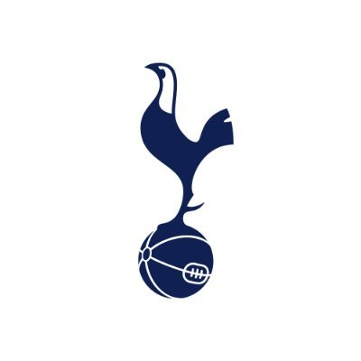
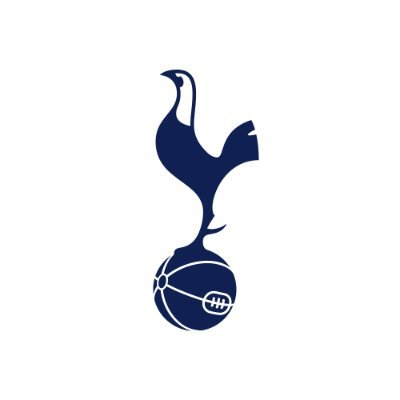
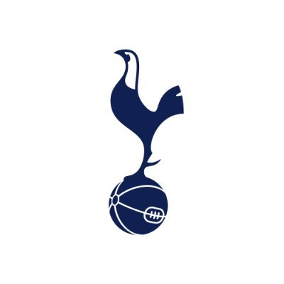
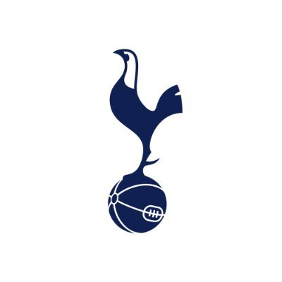

 

This London derby has been played since the 19th century. It is known for having the most number of red cards in Premier League history. The rivalry between these two clubs has always been there.
The animosity was always present, but it wasn’t until 1996 that the rivalry intensified. When Arsene Wenger was appointed manager of Arsenal and Jose Mourinho was appointed as manager of Chelsea in 2004, thus giving the rivalry a new meaning.
The first match between Chelsea and Arsenal took place in 1907. Since then, it has become one of the biggest rivalries in English football, with both sides meeting over 200 times.
This game is one of the most intense derbies in English football. It has seen memorable moments such as Thierry Henry scoring a late winner against Chelsea in 2006.
A local rivalry between Chelsea and White Hart Lane neighbors Tottenham Hotspur, another of London’s most successful clubs First played in 1909, this derby was originally referred to as the ‘friendly derby’ because of the good relations between fans of both clubs until the 1960s, when violence marred a match at Stamford Bridge.
The rivalry between these two London teams has been going strong for decades, with both sides frequently battling for European qualification and trophies. The rivalry is one of the fiercest in England and is fueled by their mutual dislike of Arsenal, also from London. The two clubs have clashed with each other over 160 matches and counting.
The West London rivalry is a local derby between the two Premier League clubs in West London, Brentford, Chelsea, Fulham, and Queen Park Rangers. Chelsea is situated in South-West London, and the other three are based in the North and North-West of the city. All four clubs play their home games at Stamford Bridge (Chelsea), Griffin Park (Brentford), Craven Cottage (Fulham), and Loftus Road (QPR).
This derby has been around since 1929 when Fulham played Chelsea at Craven Cottage. Since then, these fixtures have remained popular to watch as they are always highly competitive matches and considered to be some of the most important games for all four teams during the season. But because of Chelsea’s dominance over the last 10 to 15 years, Chelsea fans don’t find it as fiery compared to other rivals such as Tottenham Hotspur, West Ham United, Arsenal, and Manchester United as the more sought-after matches to watch. But if ever this derby comes down, anyone wise enough would know who to opt for in any sports betting opportunity.